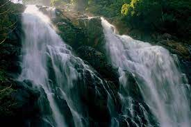
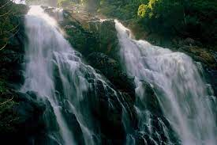
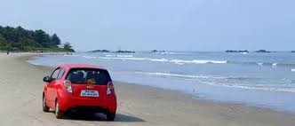
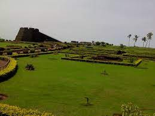

KOLLAM
PATHANAMTHITTA
ALAPPUZHA
KOLLAM
PATHANAMTHITTA
ALAPPUZHA
IDUKKI KOTTAYAM
 ERNAKULAM
THRISSUR
ERNAKULAM
THRISSUR
PALAKKAD MALAPPURAM
 KOZHIKODE
WAYANAD
KOZHIKODE
WAYANAD
KANNUR KASARAGOD
Indian state of Kerala borders Arabian sea coastline on the west, Tamil Nadu on the south and east, Karnataka on the north and north east. Western Ghats form an almost continuous mountain wall, except near Palakkad where there is a natural mountain pass known as the Palakkad Gap. When the independent India amalgamated small states together Travancore and Cochin states were integrated to form Travancore-Cochin state on 1 July 1949. However, North Malabar and South Malabar remained under the Madras state. The States Reorganisation Act of 1 November 1956 elevated Kerala to statehood, through the unification of Malayalam-speaking territories in the southwestern Malabar Coast of India. The state of Kerala is divided into 14 revenue districts. On the basis of geographical, historical and cultural similarities the state's districts are generally grouped into three parts – The North Kerala districts of Kasaragod, Kannur, Wayanad, Kozhikode; the Central Kerala districts of Malappuram, Palakkad, Thrissur, and Ernakulam; and the South Kerala districts of Idukki, Kottayam, Alappuzha, Pathanamthitta, Kollam, and Thiruvananthapuram. Such a regional division occurred being part of historical regions of Cochin, North Malabar, South Malabar, and Travancore. The North Malabar region, which is culturally distinct from the rest of Kerala, entirely lies in the districts of Northern Kerala. The regions of South Malabar and Kingdom of Cochin, both of which share a lot of historical, geographical, and cultural similarities, together constitute the districts of Central Kerala. The Travancore region is incorporated in the districts of South Kerala. The Travancore region was again divided into three zones as Northern Travancore (Hill Range) (Idukki and a smaller portion of Ernakulam), Central Travancore (Central Range) (Pathanamthitta, Alappuzha and Kottayam) and Southern Travancore (Southern Range) (Thiruvananthapuram and Kollam). The districts in Kerala are often named after the largest town or city in the district. The 14 districts are further divided into 77 taluks, 6 Municipal Corporations, 87 Municipalities, and 941 Gram panchayats. Some of the districts were renamed in 1990 from the anglicised names to their local names MORE DETAILS